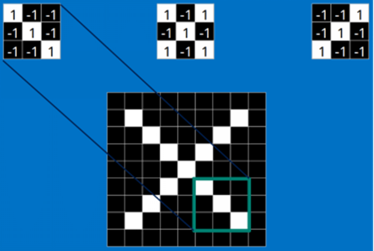
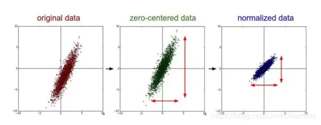
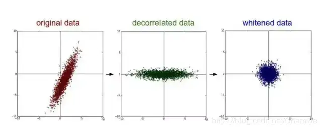
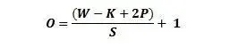
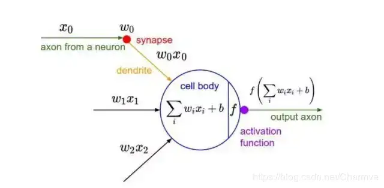
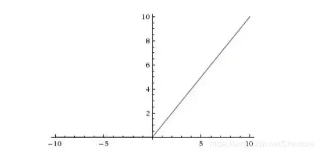
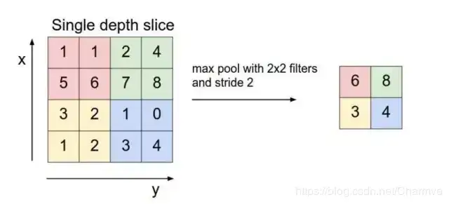
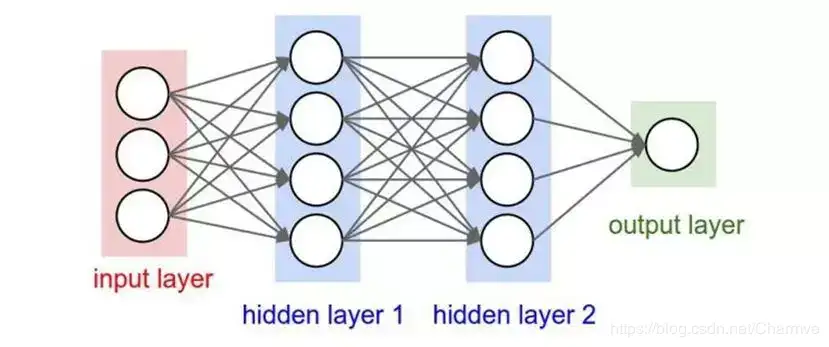

CNN卷积神经网络
引言
卷积神经网络（Convolutional Neural Network，CNN）是一种在计算机视觉领域取得了巨大成功的深度学习模型。它们的设计灵感来自于生物学中的视觉系统，旨在模拟人类视觉处理的方式。在过去的几年中，CNN已经在图像识别、目标检测、图像生成和许多其他领域取得了显著的进展，成为了计算机视觉和深度学习研究的重要组成部分。
什么是卷积
在卷积神经网络中，卷积操作是指将一个可移动的小窗口（称为数据窗口，如下图绿色矩形）与图像进行逐元素相乘然后相加的操作。这个小窗口其实是一组固定的权重，它可以被看作是一个特定的滤波器（filter）或卷积核。这个操作的名称“卷积”，源自于这种元素级相乘和求和的过程。这一操作是卷积神经网络名字的来源。
上图这个绿色小窗就是数据窗口。简而言之，卷积操作就是用一个可移动的小窗口来提取图像中的特征，这个小窗口包含了一组特定的权重，通过与图像的不同位置进行卷积操作，网络能够学习并捕捉到不同特征的信息。
下图中蓝色的框就是指一个数据窗口，红色框为卷积核（滤波器），最后得到的绿色方形就是卷积的结果（数据窗口中的数据与卷积核逐个元素相乘再求和）

卷积神经网络层级结构
一个卷积神经网络主要由以下5层组成：
- 数据输入层/ Input layer
- 卷积计算层/ CONV layer
- ReLU激励层
- 池化层 / Pooling layer
- 全连接层 / FC layer
数据输入层
该层要做的处理主要是对原始图像数据进行预处理，其中包括：
- 去均值：把输入数据各个维度都中心化为0，如下图所示，其目的就是把样本的中心拉回到坐标系原点上。
- 归一化：幅度归一化到同样的范围，如下所示，即减少各维度数据取值范围的差异而带来的干扰，比如，我们有两个维度的特征A和B，A范围是0到10，而B范围是0到10000，如果直接使用这两个特征是有问题的，好的做法就是归一化，即A和B的数据都变为0到1的范围。
- PCA/白化：用PCA降维；白化是对数据各个特征轴上的幅度归一化
去均值与归一化效果图：
去相关与白化效果图：
卷积计算层
这一层就是卷积神经网络最重要的一个层次，也是“卷积神经网络”的名字来源。
在这个卷积层，有两个关键操作：
- 局部关联。每个神经元看做一个滤波器(filter)
- 窗口(receptive field)滑动， filter对局部数据计算
先介绍卷积层遇到的几个名词：
- 深度/depth：卷积核的个数
- 步幅/stride：窗口一次滑动的长度
- 填充值/zero-padding：在外围边缘补充若干圈0，方便从初始位置以步长为单位可以刚好滑倒末尾位置，通俗地讲就是为了总长能被步长整除。
为什么要填充
- 保留边缘信息：当卷积核在图像边缘进行卷积时，如果不进行填充，边缘的像素将无法得到完整的卷积运算，因为卷积核无法完全覆盖边缘区域。通过填充，可以确保边缘像素也能被卷积核完整覆盖，从而保留更多的图像信息。
- 控制输出尺寸：填充可以控制卷积层输出的特征图（Feature Map）的尺寸。例如，通过适当的填充，可以使输出特征图的尺寸与输入图像的尺寸相同，这在某些网络结构设计中是必要的。
- 防止信息丢失：在多次卷积操作中，如果不使用填充，每次卷积都会导致输出尺寸减小，这可能会导致图像的边缘信息快速丢失。适当的填充可以减缓尺寸的减小，避免信息丢失过快。
- 实现特定的网络结构：在某些网络结构中，为了保持输入和输出的形状匹配，或者为了实现特定的网络功能，可能需要使用填充。
如果你的步幅为 1，而且把零填充设置为
K 是过滤器尺寸，那么输入和输出内容就总能保持一致的空间维度。
计算任意给定卷积层的输出的大小的公式是
其中 O 是输出尺寸，K 是过滤器尺寸，P 是填充，S 是步幅。
激活层（非线性层）
把卷积层输出结果做非线性映射
CNN采用的激活函数一般为ReLU(The Rectified Linear Unit/修正线性单元)，它的特点是收敛快，求梯度简单，但较脆弱，图像如下。
激励层的实践经验：
①不要用sigmoid！不要用sigmoid！不要用sigmoid
② 首先试RELU，因为快，但要小心点
③ 如果2失效，请用Leaky ReLU或者Maxout
④ 某些情况下tanh倒是有不错的结果，但是很少
池化层
池化层夹在连续的卷积层中间， 用于压缩数据和参数的量，减小过拟合。
简而言之，如果输入是图像的话，那么池化层的最主要作用就是压缩图像。
这里再展开叙述池化层的具体作用：
- **特征不变性**，也就是我们在图像处理中经常提到的特征的尺度不变性，池化操作就是图像的resize，平时一张狗的图像被缩小了一倍我们还能认出这是一张狗的照片，这说明这张图像中仍保留着狗最重要的特征，我们一看就能判断图像中画的是一只狗，图像压缩时去掉的信息只是一些无关紧要的信息，而留下的信息则是具有尺度不变性的特征，是最能表达图像的特征。
- **特征降维**，我们知道一幅图像含有的信息是很大的，特征也很多，但是有些信息对于我们做图像任务时没有太多用途或者有重复，我们可以把这类冗余信息去除，把最重要的特征抽取出来，这也是池化操作的一大作用。
- 在一定程度上防止过拟合，更方便优化。
池化层用的方法有Max pooling 和 average pooling，而实际用的较多的是Max pooling。这里就说一下Max pooling，其实思想非常简单。
对于每个2 * 2的窗口选出最大的数作为输出矩阵的相应元素的值，比如输入矩阵第一个2 * 2窗口中最大的数是6，那么输出矩阵的第一个元素就是6，如此类推。
全连接层
两层之间所有神经元都有权重连接，通常全连接层在卷积神经网络尾部。也就是跟传统的神经网络神经元的连接方式是一样的：
CNN代码实现一般步骤
在实现卷积神经网络（CNN）时，常见的步骤可以分为以下几个部分。下面我将以 Python 和 TensorFlow/Keras 为例，介绍 CNN 的一般实现步骤：
1. 导入必要的库
1 | import tensorflow as tf |
2. 加载和预处理数据
以 CIFAR-10 数据集为例，加载并预处理数据（包括归一化、划分训练集和测试集等）。
1 | # 加载CIFAR-10数据集 |
3. 构建CNN模型
构建一个简单的卷积神经网络模型，包括卷积层（Conv2D）、池化层（MaxPooling2D）、全连接层（Dense）。
1 | model = models.Sequential() |
4. 编译模型
在编译步骤中，指定损失函数、优化器和评估指标。
1 | model.compile(optimizer='adam', |
5. 训练模型
使用训练数据训练模型，设置训练的批次大小和训练的轮数。
1 | history = model.fit(train_images, train_labels, epochs=10, |
6. 评估模型
使用测试数据评估模型的准确性。
1 | test_loss, test_acc = model.evaluate(test_images, test_labels, verbose=2) |
7. 可视化训练过程
可以使用 Matplotlib 来可视化训练过程中的准确率和损失变化。
1 | plt.plot(history.history['accuracy'], label='训练准确率') |
总结
- 加载数据：准备数据并进行预处理。
- 构建模型：搭建卷积层、池化层、全连接层等。
- 编译模型：指定损失函数和优化器。
- 训练模型：通过数据训练模型。
- 评估模型：用测试集评估模型性能。
- 可视化结果：查看训练过程中模型的表现。
这就是实现卷积神经网络的一般步骤。可以根据需要增加模型的复杂度或改变超参数来优化模型。
1D-CNN
1D卷积神经网络（1D-CNN）是一种处理一维序列数据的深度学习模型。它广泛应用于时间序列数据、自然语言处理、音频信号处理等领域。
1. 输入数据
1D-CNN 的输入是一个一维的序列数据，通常形状为 (batch_size, sequence_length, channels)，其中：
batch_size：一次性输入的样本数。sequence_length：输入序列的长度，例如时间序列数据的时间步长或文本中的单词数量。channels：输入数据的维度，例如时间序列中可以是不同传感器的数据，文本中可以是词向量的维度。
2. 卷积操作
1D卷积的本质是在一维数据上滑动卷积核（过滤器），并对局部区域进行特征提取。具体过程如下：
- 卷积核（kernel/filter）：一个大小为
k的窗口，会滑动经过输入序列，并在每次滑动时计算输入和卷积核的逐点乘积和。 - 滑动窗口：卷积核从输入数据的一端开始，以设定的步长（stride）向右滑动，依次计算出一系列的卷积结果（称为特征图，feature map）。
- 输出特征图：每个卷积核在输入数据上滑动并计算输出，结果是一个新的序列，称为特征图。多个卷积核可以提取不同的特征，产生多个特征图。
公式上可以表示为：
$$
{output}[i] = \sum_{j=1}^{k} \text{input}[i+j] \times \text{kernel}[j]
$$
其中，i 表示卷积窗口的起始位置，k 是卷积核的大小。
3. 激活函数
卷积后的特征图通常会经过一个非线性激活函数（例如 ReLU），来引入非线性特性，提高模型的表达能力。
1 | output = tf.nn.relu(conv_output) |
4. 池化操作（可选）
1D-CNN 中通常使用池化操作（如最大池化 max pooling 或平均池化 average pooling），通过取窗口中的最大值或平均值来对特征进行下采样，减少数据维度，保留重要信息，同时防止过拟合。池化的窗口也是一维的，通常设定为固定大小。
1 | pooled_output = tf.layers.max_pooling1d(output, pool_size=2, strides=2) |
5. 多层卷积
1D-CNN 通常由多个卷积层堆叠而成，上一层的输出特征图作为下一层的输入，进一步提取特征。每一层的卷积核数量通常会增加，从而提取更多的特征。
6. 全连接层与分类层
在卷积层的最后，1D-CNN 输出的特征图会通过一个全连接层（fully connected layer，FC）或多层感知器（MLP）进行进一步处理，通常用来进行分类、回归等任务。为了进行分类，最后的输出维度会设置为分类的类别数，并可能通过 softmax 函数将输出转化为概率分布。
7. 损失函数与优化
在分类任务中，1D-CNN 最终的输出会与真实标签计算损失（例如交叉熵损失），然后通过反向传播算法更新网络中的参数，优化模型的性能。
1D-CNN 工作流程总结
- 输入：输入序列数据，如时间序列、文本数据等。
- 卷积：卷积核滑动提取局部特征。
- 激活：使用激活函数（如 ReLU）引入非线性。
- 池化（可选）：下采样特征图，减少维度。
- 多层卷积：重复堆叠卷积层，提取高级特征。
- 全连接层：将提取的特征用于分类或回归任务。
- 输出：分类或回归的结果，应用损失函数优化模型。
示例代码
以下是一个简单的 1D-CNN 的实现示例：
1 | import tensorflow as tf |
应用领域
- 时间序列分析：如股票数据、传感器数据、心电图（ECG）信号。
- 自然语言处理：文本分类、情感分析等任务。
- 音频处理：如语音识别中的声学特征提取。
1D-CNN 通过对一维序列数据的局部特征提取和特征组合，在许多应用中表现出色。
2D-CNN
2D卷积神经网络（2D-CNN）是处理二维数据的深度学习模型，特别适合处理图像、视频帧等二维结构的数据。它在计算机视觉任务（如图像分类、目标检测和分割）中广泛应用。以下是2D-CNN的详细过程：
1. 输入数据
2D-CNN 的输入通常是二维数据，常见于图像。输入的形状一般为 (batch_size, height, width, channels)，其中：
batch_size：一次性处理的样本数。height和width：图像的高度和宽度。channels：通道数，如灰度图的通道数为1，RGB图像的通道数为3。
例如，输入可能是 28x28 的灰度图像，形状为 (batch_size, 28, 28, 1)。
2. 卷积操作
卷积操作是 CNN 的核心，通过卷积核（filter）对输入图像进行局部特征提取。卷积操作通过将一个小窗口在输入图像上滑动，并计算其与窗口内数据的点积来生成输出特征图（feature map）。
卷积步骤
- 卷积核（kernel/filter）：通常大小为
k x k的二维矩阵（如3x3或5x5），在输入图像上滑动。 - 滑动窗口：卷积核从左上角开始，按照指定的步长（stride）在图像上滑动，生成每个局部区域的卷积输出。滑动的步长决定了特征图的输出大小。
- 输出特征图：卷积操作在整个输入图像上滑动，输出一个新的二维特征图。多个卷积核可以提取不同的特征，因此会输出多个特征图。
卷积操作的公式如下：
$$
{output}(i, j) = \sum_{m=1}^{k} \sum_{n=1}^{k} \text{input}(i+m, j+n) \times \text{kernel}(m, n)
$$
其中 i, j 是卷积核在输入图像上的位置。
填充（Padding）
- valid padding：不使用填充，卷积核只能滑动到图像的边界内，输出特征图的尺寸小于原图。
- same padding：在图像的边缘添加零填充，使得卷积操作后输出特征图的尺寸与输入图像相同。
3. 激活函数
卷积后的特征图通常通过激活函数（如 ReLU）来引入非线性，激活函数作用在每个卷积输出的元素上。ReLU（Rectified Linear Unit）的常用公式是：
$$
f(x)=max(0,x)
$$
ReLU 将负值置为 0，保持正值不变，提高了模型的非线性表达能力。
1 | conv_output = tf.nn.relu(conv_output) |
4. 池化操作（Pooling）
池化操作通过下采样的方式减少特征图的尺寸，从而减少模型计算量和防止过拟合。常见的池化方法有 最大池化（Max Pooling） 和 平均池化（Average Pooling）。
- 最大池化：取窗口内的最大值。
- 平均池化：取窗口内所有值的平均值。
池化窗口大小通常为 2x2，步长为2，这样每次池化会将特征图的大小减半。
1 | pooled_output = tf.nn.max_pool(conv_output, ksize=[1, 2, 2, 1], strides=[1, 2, 2, 1], padding='SAME') |
5. 多层卷积
2D-CNN 通常由多层卷积和池化层堆叠而成。每层卷积可以提取更高级的特征：
- 第一层卷积可能提取边缘、角等低级特征。
- 随着层数加深，后续层能够提取更加复杂的特征，如物体的形状和结构。
每一层卷积后的特征图通常会随着通道数增加，但空间维度（高度和宽度）通常会通过池化逐渐减小。
6. 全连接层（Fully Connected Layer, FC）
在卷积层之后，通常会将2D特征图展平（Flatten），转化为一维向量，并通过全连接层进行分类或回归任务。
- 展平：将二维的特征图转换为一维向量，方便全连接层处理。
- 全连接层：将展平的特征输入到全连接层，经过线性变换后输出最终的分类结果。最后一层的输出维度与类别数相等，表示每个类别的预测分数。
1 | flattened = tf.layers.flatten(pooled_output) |
7. 损失函数与优化
对于分类任务，最后一层通常输出一个类别数的向量，通过 softmax 函数将其转化为概率分布：
1 | predictions = tf.nn.softmax(logits) |
损失函数通常使用交叉熵损失，通过反向传播和优化器（如 Adam 或 SGD）来优化模型。
2D-CNN 工作流程总结
- 输入：二维数据，如图像。
- 卷积层：提取局部特征，卷积核在图像上滑动。
- 激活函数：如 ReLU 引入非线性。
- 池化层：下采样特征图，减少维度。
- 多层卷积与池化：堆叠多个卷积和池化层提取高级特征。
- 展平与全连接层：将特征图展平，输入全连接层。
- 输出层：通过 softmax 等进行分类，输出类别概率。
示例代码
以下是一个简单的2D-CNN实现示例，用于处理输入的图像数据：
1 | import tensorflow as tf |
应用领域
- 图像分类：如手写数字识别（MNIST）、物体识别（CIFAR-10）。
- 目标检测：如人脸检测、行人检测等。
- 图像分割：如医学图像的病灶区域分割。
2D-CNN 通过局部卷积提取图像中的层级特征，逐步缩小空间维度，保留重要的高层次语义信息，在图像处理中取得了显著的成功。
3D-CNN
3D卷积神经网络（3D-CNN）是处理三维数据的深度学习模型，常用于视频处理、医学图像（如CT、MRI扫描）和体素数据等领域。与2D-CNN不同，3D-CNN的卷积操作在三维空间中进行，能够捕捉数据的空间和时间上的特征。以下是3D-CNN的详细过程：
1. 输入数据
3D-CNN的输入通常是三维数据，常见于视频或医学图像。输入的形状一般为 (batch_size, depth, height, width, channels)，其中：
batch_size：一次性处理的样本数。depth：深度，表示输入数据的第三个维度，例如视频的帧数、体素数据的深度等。height和width：高度和宽度，表示输入的二维空间维度。channels：通道数，表示输入数据的通道数（如RGB图像的通道数为3）。
例如，输入可能是 16x128x128 的体积数据（深度16，宽度128，高度128），形状为 (batch_size, 16, 128, 128, 1)。
2. 卷积操作
3D卷积操作与2D卷积类似，不同之处在于它在三维空间中滑动卷积核，提取局部的体积特征。卷积核在depth、height、width三个维度上滑动，产生三维的特征图。
卷积步骤
- 卷积核（kernel/filter）：大小为
k x k x k的三维矩阵（例如3x3x3或5x5x5），在输入的体积数据上滑动，生成输出特征图。 - 滑动窗口：卷积核在三维输入数据上滑动，按照指定的步长（stride）进行移动，步长可以在三维空间内控制移动的步幅。
- 输出特征图：每次滑动后，将局部的输入数据与卷积核计算点积，生成一个输出值。整个卷积过程结束后，会生成三维的特征图。
公式上，3D卷积的操作可以表示为：
$$
{output}(i, j, k) = \sum_{d=1}^{D} \sum_{h=1}^{H} \sum_{w=1}^{W} \text{input}(i+d, j+h, k+w) \times \text{kernel}(d, h, w)
$$
其中，i, j, k 是卷积核在输入数据上的位置，D, H, W 分别是卷积核的深度、高度和宽度。
填充（Padding）
- valid padding：不使用填充，卷积核只能滑动到数据的边界内，输出的特征图比输入数据尺寸小。
- same padding：在输入数据的边缘添加零填充，确保输出特征图的尺寸与输入相同。
3. 激活函数
卷积后的特征图通常会通过一个激活函数（如 ReLU）引入非线性。ReLU（Rectified Linear Unit）是最常见的激活函数，它将负值置为 0，保持正值不变。
1 | conv_output = tf.nn.relu(conv_output) |
4. 池化操作（Pooling）
在3D-CNN中，池化操作通常也在三维空间内进行，称为 3D池化（3D pooling）。它通过对体积特征的下采样，减少数据的空间和深度维度，从而减少计算量和防止过拟合。常用的池化方法有：
- 最大池化（Max Pooling）：取池化窗口内的最大值。
- 平均池化（Average Pooling）：取池化窗口内所有值的平均值。
池化的窗口通常为 2x2x2，步长为2，这样每次池化操作会将特征图的大小减半。
1 | pooled_output = tf.nn.max_pool3d(conv_output, ksize=[1, 2, 2, 2, 1], strides=[1, 2, 2, 2, 1], padding='SAME') |
5. 多层卷积
3D-CNN通常由多层卷积和池化层堆叠而成。每一层卷积提取的特征越来越复杂，前面的卷积层可能提取边缘、角等低级特征，而后面的层则提取更高级的特征，如物体的形状或视频中的运动模式。
6. 全连接层（Fully Connected Layer, FC）
在卷积层和池化层之后，输出的三维特征图会被展平（Flatten）为一维向量，并通过全连接层处理，用于分类或回归任务。
- 展平：将3D特征图转换为一维向量，方便后续的全连接层处理。
- 全连接层：一维向量输入到全连接层，通过线性变换后输出分类结果。
1 | flattened = tf.layers.flatten(pooled_output) |
7. 损失函数与优化
在分类任务中，最后的输出通常是一个类别数的向量，通过 softmax 函数将其转化为概率分布。损失函数通常使用交叉熵损失，然后通过反向传播和优化器（如Adam或SGD）来优化模型。
1 | predictions = tf.nn.softmax(logits) |
3D-CNN 工作流程总结
- 输入：三维数据，如视频序列、体素数据或医学图像（CT/MRI）。
- 卷积层：在三维数据上进行卷积操作，提取局部体积特征。
- 激活函数：如 ReLU 引入非线性。
- 池化层：对体积特征进行下采样，减少数据维度。
- 多层卷积与池化：堆叠多个卷积层，提取更高级的特征。
- 展平与全连接层：将三维特征图展平为一维向量，输入全连接层进行分类或回归。
- 输出层：通过softmax等进行分类，输出类别概率。
示例代码
以下是一个简单的3D-CNN实现示例，用于处理输入的三维体积数据（如视频或体素数据）：
1 | import tensorflow as tf |
应用领域
- 视频分析：如动作识别、视频分类。
- 医学图像处理：如三维CT、MRI扫描的病灶检测与分类。
- 体素数据分析：如3D建模、3D物体识别。
3D-CNN通过对三维数据的局部卷积提取体积特征，可以捕捉空间和时间上的依赖性，特别适合处理三维或多帧数据。
Original link: http://example.com/2024/09/09/CNN卷积神经网络/
Copyright Notice: 转载请注明出处.